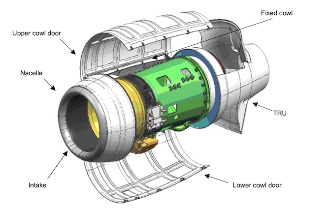

Rolls-Royce Aerospace
Reliability & Failure Modes, Effects, & Criticality analysis.
The Rolls-Royce BR700-725 powerplant is a high-performance aircraft engine designed with rigorous reliability and safety standards for aviation applications. Developed from the proven BR710 engine, the BR700-725 was meticulously assessed to achieve exceptional reliability and operational efficiency, ensuring minimal in-flight shutdowns (IFSD) and unscheduled engine removals (UER).
A comprehensive reliability prediction analysis was conducted, leveraging advanced Failure Mode, Effects, and Criticality Analysis (FMECA). This process systematically identified potential failure modes, assessed their operational impacts, and quantified critical performance metrics, including IFSD and mean time between unscheduled engine removals (MTBUER).

The analysis covered every aspect of the engine, including the nacelle, fan module, internal gearbox, high-pressure compressor (HPC), combustor, high-pressure turbine (HPT), low-pressure turbine (LPT), accessory gearbox, oil system, and engine air systems. Each module was rigorously evaluated for reliability, adhering to stringent contractual and certification standards, which required an IFSD rate of less than 0.01 per 1,000 engine flight hours (EFH) and an MTBUER greater than 20,000 EFH.
The final reliability predictions demonstrated exceptional performance, surpassing project requirements.